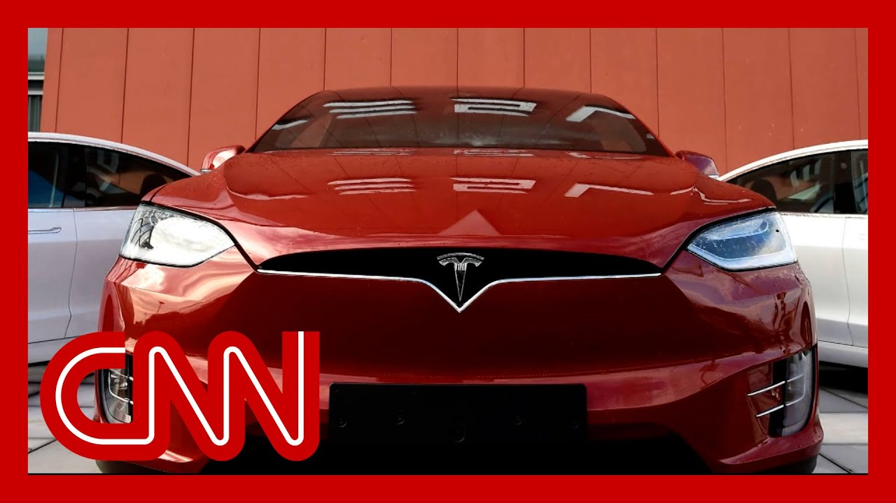

【特斯拉股票抛售加剧，同时马斯克与特朗普争执升级】
Summary: The feud between Elon Musk and Donald Trump escalates, impacting Tesla's stock as Trump threatens to cut Musk's government subsidies, while Musk accuses Trump of being linked to Epstein.
摘要： 埃隆·马斯克与唐纳德·特朗普的争执升级，影响特斯拉股价，特朗普威胁取消马斯克的政府补贴，而马斯克则指控特朗普与爱泼斯坦有关联。

⏱️ Estimated Reading Time: 14 min
📚 高考3500生词 📚 雅思生词 📚 托福生词 📚 GRE生词 📚 UP主推荐生词
When Musk left the government last week, he said it was to focus on his c including Tesla and group of Tesla shareholders.
上周马斯克离开政府时，他表示是为了专注于包括特斯拉和特斯拉股东群体在内的事务。
It even accused him of being abs amid a crisis, as the company showrooms were targeted by vanda and its stock price slipped.
甚至有人指责他在危机中缺席，因为公司展厅遭到破坏，股价下跌。
Which, by the way, let's check in on Tesla stock he The market just closed.
顺便说一下，让我们看看特斯拉股票——市场刚刚收盘。
Shares in Tesla closed down over Trump's Oval Office remarks and tweet spree.
特斯拉股价因特朗普在椭圆形办公室的言论和推文狂潮而收盘下跌。
Yeah, that started around noon t That was basically the high poin
是的，那大约从中午开始，那基本上是高点。
And billions have been wiped from Tesla's value in the meanti
与此同时，特斯拉的市值已蒸发数十亿。
Look, Elon and I had a great relationship.
听着，埃隆和我曾有过很好的关系。
I don't know if. Well, anymore, they might not even be friends a
我不知道现在是否还是，他们甚至可能不再是朋友了。
All right. but we literally tried to produc some actual popcorn for the show because it seems like that kind
好吧，但我们真的试图为这场戏准备些爆米花，因为这看起来就是那种情况。
But let me tell you, it got much than what we just walked through right there.
但让我告诉你，事情比我们刚才经历的还要严重得多。
Because the president, presumably after seeing Musk's tweets, responded, this Elon was wearing thin.
因为总统可能在看到马斯克的推文后回应说，埃隆已经让人厌烦了。
I asked him to leave. I took away his EV mandate that forced everyone to buy electric cars that nobody else w
我让他离开。我取消了他的电动车强制令，那迫使每个人购买没人想要的电动车。
that he knew for months that I was going to do, and he just went crazy.
他几个月前就知道我会这么做，然后他就疯了。
The easiest way to save money in our budget, bil and billions of dollars, is to t Elon's governmental subsidies and contracts.
在我们的预算中节省数十亿美元的最简单方法就是取消埃隆的政府补贴和合同。
I was always surprised that Biden didn't do it.
我一直很惊讶拜登没有这么做。
Do you think that would end ther
你认为事情会就此结束吗？
You would be wrong.
那你错了。
And I'm pretty sure none of you thought that it would end there, because here's what Musk said.
我很确定你们没人认为事情会就此结束，因为马斯克是这样说的。
Go ahead, make my day.
来吧，让我高兴一下。
And for the record, Musk continued to tweet about Tr after this is probably still twe
记录一下，马斯克之后继续在推特上谈论特朗普，可能还在发推。
Jeffrey Epstein has been mention but we have to cut it off somewh
杰弗里·爱泼斯坦被提及，但我们得在某个地方打住。
We're going to talk to our panel in just a moment, but we're going to start with Kristen Holmes at the white
我们稍后将与专家小组讨论，但首先从白宫的克里斯汀·霍姆斯开始。
Kristen, I do think certainly when the Musk Trump bromance began, there was a lot of speculation about the inevitability of a day like this.
克里斯汀，我确实认为，当马斯克和特朗普的“兄弟情”开始时，很多人就猜测像今天这样的日子不可避免。
It actually lasted quite a while the two seemed to manage to like you know, keep their relationshi on track through Musk's tenure.
实际上这段关系持续了相当长的时间，两人似乎设法在马斯克任职期间保持关系正常。
I guess at this point, I have to I mean, is the Tesla the Trump bot still on the white House grounds
我想现在我得问，特斯拉的特朗普机器人还在白宫吗？
It sounds like we're set to perhaps hear from the president later on toda
听起来我们今天晚些时候可能会听到总统的回应。
what have you seen so far today at the white House? And what are you expecting to co
今天你在白宫看到了什么？你预计接下来会发生什么？
Well, I mean, Casey, there's bre and then there is publicly taking a flamethrower to another person to completely try and destroy their reputation and livelihood, which is what we've seen these two men engage in for the last several hours.
嗯，凯西，有争吵，然后还有公开用火焰喷射器攻击另一个人，试图彻底摧毁他们的声誉和生计，这就是过去几个小时我们看到的这两位的行为。
You have Donald Trump there sayi he's going to take away government contract subsidies to the tune of billions of dollars from Elon Musk, which would be his livelihood.
唐纳德·特朗普在那里说，他将取消给埃隆·马斯克的数十亿美元的政府合同补贴，那将是他的生计。
And as you mentioned, Elon Musk is making this a nucle by essentially claiming that Donald Trump is in the quote, Epstein files.
正如你提到的，埃隆·马斯克将此事升级，声称唐纳德·特朗普在所谓的“爱泼斯坦文件”中。
Now, just one thing to make clea We don't even believe or we don't even know that any Epstein files exist.
现在，有一点要澄清，我们甚至不相信或不知道是否存在任何爱泼斯坦文件。
We have no indication that Musk would have access to t
我们没有迹象表明马斯克能接触到这些文件。
But of course, this is a long li conspiracy theory that there are some files out there of clients of Jeffrey Epstein's.
但这当然是一个长期存在的阴谋论，认为存在一些杰弗里·爱泼斯坦客户的文件。
And we reached out to the white to get a response to this.
我们联系了白宫以获取对此的回应。
Donald Trump is going to sit for a roundtable with the Fraternal Order of Poli any moment now.
唐纳德·特朗普即将与警察兄弟会举行圆桌会议。
And this is not one that his adv are going to respond for him.
这不是他的顾问会替他回应的场合。
They are going to give him the opportunity. The cameras will be there.
他们会给他机会。摄像机将在场。
And we were told, Donald Trump wants to talk about
我们被告知，唐纳德·特朗普想谈论
Just remember, as you said, Donald Trump did not respond to Elon Musk's lambasting of his legacy bill for two days.
记住，正如你所说，唐纳德·特朗普两天没有回应埃隆·马斯克对他遗产法案的抨击。
It wasn't until he was asked about it today that he really laid into it, and even then, just saying that he was disappointed.
直到今天他被问及此事时，他才真正猛烈抨击，即便如此，也只是表示他很失望。
Now it gets incredibly personal, saying that it's wearing thin.
现在变得极其个人化，说已经让人厌烦了。
You see Elon Musk saying that's That's a lie.
你看到埃隆·马斯克说那是谎言。
They're going back and forth, back and forth.
他们来回交锋，你来我往。
Yes, there is somewhat of a juvenile angle to this, but these are also two of the most powerful men in who are having this public break right now.
是的，这有些幼稚，但这也是两位世界上最有权势的人正在公开决裂。
What you said, of course, at some times people speculated this could hap
正如你所说，有时人们猜测这可能会发生。
Two men with huge egos, big personalitie
两个自负、个性鲜明的人。
but the white House advisers thought they got off scot free.
但白宫顾问以为他们安然无恙。
They thought that on Friday he w
他们以为周五他
They had a pleasant meeting. They praised each other and he was out the door.
他们有过愉快的会面。他们互相称赞，然后他就离开了。
And a lot of people were happy to see him go.
很多人很高兴看到他离开。
Donald Trump is right about that
唐纳德·特朗普说得对
He was wearing thin on some of the advisers who said it was time for him to
一些顾问已经对他感到厌烦，说他是时候
But right now, what you are seeing is a complete escalation in some cases and also a devolving of this rel that we watched for the first four months.
但现在，你看到的是在某些情况下的全面升级，以及我们观察了前四个月的关系恶化。
It's really a signature part of the first four months or five months of Donald Trump's time in office.
这确实是特朗普上任前四五个月的标志性部分。
So right now, we are waiting to see how Donald Trump responds to this incredibly personal atta
所以现在，我们等待看唐纳德·特朗普如何回应这次极其个人的攻击。
Obviously trying to make it more personal, trying to spark conspiracy theories around the current president.
显然试图让事情更个人化，试图围绕现任总统引发阴谋论。
Elon Musk doing so, taking it to a whole new level h
埃隆·马斯克这样做，将事情推向全新高度
A whole new level indeed. Kristen Holmes, I know you'll be standing by for us throughout the hour as we wait for Donald Trump to weigh in on camera on this.
确实是全新高度。克里斯汀·霍姆斯，我知道在我们等待唐纳德·特朗普在镜头前回应此事时，你会一直为我们守候。
Our panel joins us now. Elliot Williams, CNN legal analyst, former federal prosecutor Kristen Soltis Anderson, CNN political commentator, Republican pollster Adrian Elrod, former senior advi to the Biden-Harris campaign, not Ours, Republican strategist. And Phil Siddiqi, technology reporter at The Washington Post and an Elon Musk biographer, is also with us.
我们的专家小组现在加入。埃利奥特·威廉姆斯，CNN法律分析师，前联邦检察官；克里斯汀·索尔蒂斯·安德森，CNN政治评论员，共和党民意调查专家；阿德里安·埃尔罗德，拜登-哈里斯竞选团队前高级顾问（不是我们的），共和党策略师；以及菲尔·西迪基，《华盛顿邮报》科技记者，埃隆·马斯克传记作者，也和我们在一起。
But before we start our conversa I do want to just roll some of t to remind all of us what this relationship, this relationship between Donald Trump and Elon Mu a relationship that, let's be honest, has impac the lives of certainly thousands, perhaps millions of A through these Doge cuts and other measures.
但在我们开始讨论之前，我想播放一些片段，提醒我们所有人这段关系，唐纳德·特朗普和埃隆·马斯克的关系，老实说，通过这些狗狗币削减和其他措施影响了成千上万，甚至数百万人的生活。
What it looked like before they I mean, this is beyond a breakup
在他们之前是什么样子——我是说，这不仅仅是分手
This feels like a really nasty d where all the assets are on the and everybody's fight fighting over who gets to keep w
这感觉像是一场非常难看的离婚，所有资产都摆在桌面上，每个人都在争夺谁保留什么
This is what it looked like befo Watch it is the only reason we can now send American astronauts into sp
这是之前的样子——看，这是我们现在能将美国宇航员送入太空的唯一原因
Come here. Take over Elijah's take on. I'm not just MAGA, I'm Doug Gosnell, MAGA.
过来。接管以利亚的看法。我不只是MAGA，我是道格·高斯内尔，MAGA。
And we're going to take Doge to
我们要把狗狗币带到
We love Elon. Is that guy. He's a character the people voted for for major government reform.
我们爱埃隆。就是那个人。他是人们投票支持重大政府改革的人物。
And that's what people are going
这就是人们将要
He's an incredible patriot, and I don't even know if he's a Republican.
他是一个了不起的爱国者，我甚至不知道他是不是共和党人。
Elon is really not leaving. He's going to be back and forth.
埃隆真的不会离开。他会来回奔波。
I think I have a feeling. So, that's, that's it. thank you, Mr. President. Thank you. Appreciate you.
我想我有预感。所以，就这样。谢谢您，总统先生。谢谢。感谢您。
So that's not it, because just 60s ago or so, a li more, we got this on Truth Social from the president of the United
所以还没结束，因为大约60秒前，多一点，我们从美国总统的Truth Social上得到了这个
He says, quote, I don't mind Elon turning agains but he should have done so month
他说，引用，我不介意埃隆反对，但他应该几个月前就这么做
This is one of the greatest bill ever presented to Congress. It's a record cut in expenses, etc., etc., etc.
这是提交给国会的最伟大的法案之一。这是创纪录的削减开支，等等，等等，等等。
I didn't create this mask. This puts our path of greatness. Make America great again.
我没有创造这个面具。这奠定了我们伟大的道路。让美国再次伟大。
Christine. Kristen Anderson, let me start w because you asked your team, your polling team to go back and look at of these two men.
克里斯汀。克里斯汀·安德森，让我从你开始，因为你让你的团队，你的民调团队回去研究这两个人。
This is like a mega showdown for the ages, right? What do Republicans think of each of these men? Who is going to come out on top
这就像一场世纪大对决，对吧？共和党人对这两个人有什么看法？谁会胜出？
So before today, Elon Musk was pretty popular with Republic
所以在今天之前，埃隆·马斯克在共和党人中相当受欢迎
In my data. He was up among Republicans. 74% found that he was, they viewed favorably even more when you look at the most MAGA of Republicans.
在我的数据中。他在共和党人中支持率上升。74%的人认为他，他们对他看法更积极，尤其是最MAGA的共和党人。
But you know, who's more popular with these Re and Elon Musk, it's Donald Trump
但你知道，谁更受这些共和党人欢迎，埃隆·马斯克还是唐纳德·特朗普，是唐纳德·特朗普
And so in the battle of billiona with an interest in policy, who's really good at trolling on social media vers billionaire with an interest in at trolling on social media, I suspect Republicans will come down on Trump's side, with one exception the fact that Musk is sort of attacking him from th from the fiscal conservatives si
所以在对政策感兴趣、擅长在社交媒体上挑衅的亿万富翁之间的战斗中，我怀疑共和党人会站在特朗普一边，除了马斯克从财政保守派的角度攻击他这一点
I'll be interested to see how much of that Old-Scho Tea Party DNA is still flowing through today's Republican Party
我会有兴趣看看今天共和党中还有多少老派茶党的基因